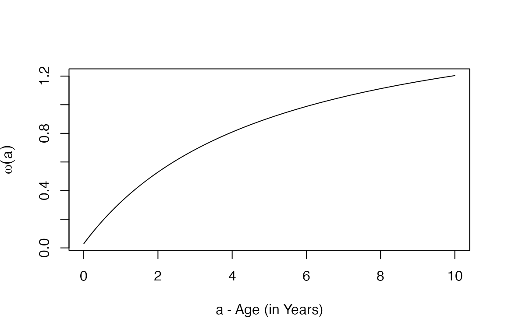
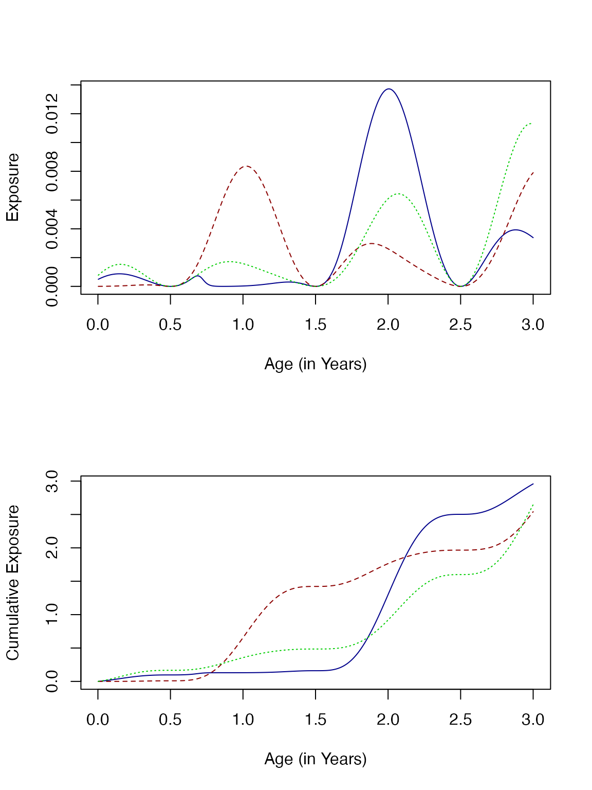

Cohorts
Trace Functions for Exposure for Different Cohorts in a Population
Source:vignettes/Cohorts.Rmd
Cohorts.RmdTo construct a trace function to models exposure in different cohorts in the same population as they age:
?make_F_aTo understand or compare models for malaria epidemiology, we will often find it useful to construct trace functions describing exposure — either the daily entomological inoculation rate (EIR) or the force of infection (FoI) — in cohorts as they age.
Average exposure in the population is specified by a composed time series function. \[E(t) = \bar X \times S(t) \times T(t) \times K(t)\]
If we want to compare cohorts in the same population, then we must acknowledge that exposure differs by age. To model exposure, we construct a function to model relative biting rates by age: \[\omega(a)\] To model exposure for a cohort born on day \(d,\) we note that time and age are related by \(a = t-d.\) Exposure with respect to age for that cohort is thus: \[E(a) = \bar X \times \omega (a) \times S(t-d) \times T(t-d) \times K(t-d).\]
Example
Exposure in a Population
To illustrate, we specify a seasonal pattern, a trend, and a shock:
Sp <- makepar_F_sin()
Tp <- makepar_F_spline(tt=365*c(0:5), yy=c(1,1,1.6,.3,.7,1))
Kp <- makepar_F_sharkbite(D=260, L=300)Over time, exposure in the population looks like this:
Suppose that relative biting rate by age looks like this:
Sa <- makepar_F_type2()
F_a <- make_F_t(Sa)
aa <- 1:3650
plot(aa/365, F_a(aa), type = "l", xlab = "a - Age (in Years)", ylab = expression(omega(a)))
Over the first three years of life, the patterns of exposure are quite different. In particular, exposure for the cohort born a year after the start of the study (dark red, dashed line) peaks in the first year of life.
par(mfrow = c(2,1))
Fa <- make_F_a(avg = 3/365, age_par=Sa, season_par=Sp, trend_par=Tp, shock_par=Kp)
aa <- 1:1095
plot(aa/365, Fa(aa), col = "darkblue", type ="l", ylab = "Exposure", xlab = "Age (in Years)")
lines(aa/365, Fa(aa, d=365), col = "darkred", lty=2)
lines(aa/365, Fa(aa, d=730), col = "green3", lty =3)
plot(aa/365, cumsum(Fa(aa)), col = "darkblue", type ="l", ylab = "Cumulative Exposure", xlab = "Age (in Years)")
lines(aa/365, cumsum(Fa(aa, d=365)), col = "darkred", lty=2)
lines(aa/365, cumsum(Fa(aa, d=730)), col = "green3", lty =3)